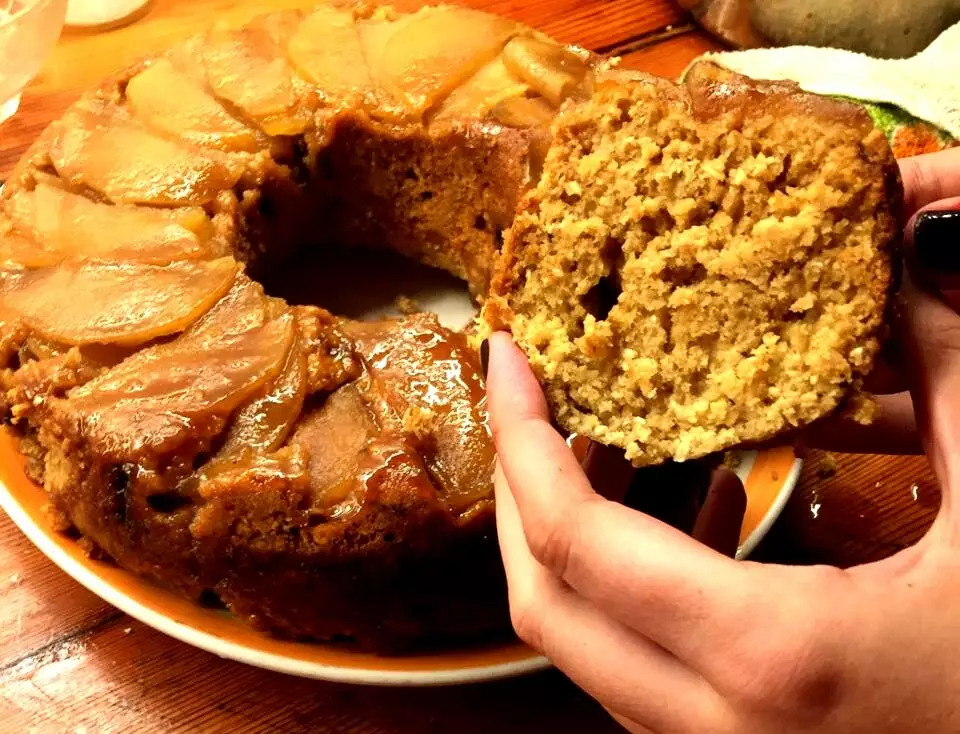

🍒 15 cerezas con cavito
🍒 20 g chocolate mínimo 85% cacao (👁 si se utiliza baño de repostería, que no es chocolate aunque nos lo quieran vender como tal, la receta deja de ser saludable)
🍒 1 cdta AOVE
Preparación
1- Lavar y secar las cerezas, conservando el cavito.
2- Colocar el chocolate junto al aceite, en un recipiente apto para baño María.
Fundir, controlando que el agua no hierva. Retirar antes de que funda completamente.
3- Con delicadeza, tomar las cerezas del cavito y sumergir las en el chocolate fundido.
4- Colocarlas sobre placa de silicona o papel para horno.
5- Si están en un ambiente muy cálido, llevar a la heladera hasta que el baño tome consistencia.
Bizcochuelo invertido de manzana, avena, coco, ricota y miel.

Ingredientes
- 300 gr copos de avena
- 300 gr harina de garbanzos (o integral)
- 300 gr ricota
- 300 gr azúcar de mascabo
- 2 manzanas grandes
- 2 huevos
- 3 cucharadas coco rallado
- 4 cucharadas miel
- 1 cucharada aceite
- 1/2 taza leche descremada
- 1 cucharada polvo de hornear
- 1 cucharadita bicarbonato de sodio
- 2 tapitas esencia de vainilla
A gusto: chips/nueces/pasas, etc
Preparación
1- Precalentar el horno a 180 grados por 20 minutos. Durante el precalentado,
colocar el molde dentro del horno con dos de las cucharadas de miel,
tres de azúcar, y las manzanas cortadas bien finitas sobre esa mezcla.
2- En un bowl colocar los huevos, la leche, las otras dos cucharadas de la miel y
las otras dos del azúcar. Batir hasta integrar bien.
Fundir, controlando que el agua no hierva. Retirar antes de que funda completamente.
3- Luego, colocar en el mismo bowl los ingredientes restantes y batir hasta integrarlos.
Tiene que quedar una masa bien espesa.
4- Cuando tengamos la mezcla, verterla en el mismo molde donde tenemos las manzanas y
cocinar por 40 minutos aproximadamente a 180°.
5-Listo! Ahora solo queda disfrutar este bizcochuelo, que, además de ser riquísimo, es muy sano y liviano.